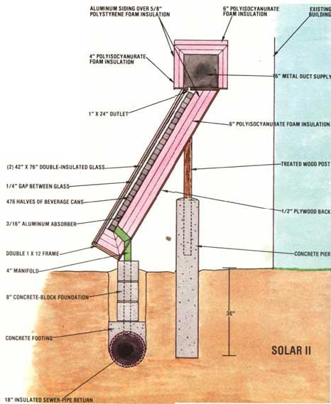
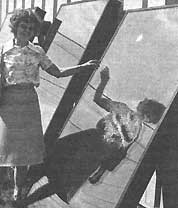

A Solar-Heated Church
An inspired leader and a willing congregation reaped unexpected benefits when they created ...
By Jim Strothman
May/June 1983
Inexpensive solar heaters (made with sliced-in-half beer and soda cans) have cut the Washingtonville, New York First Presbyterian Church's fuel costs by 55 percent!
The project got under way in the fall of 1978, when the Reverend Lee H. Poolea - longtime solar advocate - convinced the church's council to put up $110 to build a collector. He drew up the plans himself, and the first unit was constructed over the course of a single weekend in a member's back yard.
"We tested our creation on a sunny October afternoon," the minister recalled, "and the temperature inside the collector reached 203 degrees Fahrenheit. So we knew then that my design would work, and as a result the council agreed to fund two more units."
A Quick Payoff
The Reverend's system was hooked into the church's Sunday school building by air ducts and a fan that drew cool air in from the basement and passed it through the collectors and into the building again. It reduced the church's fuel oil costs by more than $650 that first winter, almost exactly what it cost to construct and install the complete solar heating system.
The church then offered to "spread the word" by sending information about the solar heater design to anyone who'd mail in $1.00. A few months later, the New York Times and other newspapers, as well as a number of church magazines, publicized their offer - and that attention brought in more than 13,000 letters, from all 50 states and 29 foreign countries.
"During the peak of our mail-answering period," the pastor noted, "we were printing plans in lots of 2,000, and we had five youngsters and three mothers sending them out and taking money to the bank."
After taking care of the printing and postage costs, the church found that it had made a profit of $7,000, which was then used to build a much more elaborate eight-unit system, dubbed "Solar II." These collectors were put into operation in October 1980.
While installing the enlarged setup, Lee and his helpers decided that they needed some professional assistance, primarily help in installing ducts and fans and tackling the necessary electrical work. The fee for that labor came to $2,400, and brought the total price of Solar II to about $6,700 - but as the following figures show, the system has already proved to be a bargain.
You see, during the winter of 1975-76, the church used 4,572 gallons of oil to heat its 96,800 cubic feet of volume. However, after aluminum siding was installed on the buildings, the fuel oil requirements dropped to 3,810 gallons in the winter of 1976-77 and to 3,738 gallons in 1977-78. Then during the winter of 1978-79, when the initial three-unit heater was installed, usage dropped to 2,869 gallons, and - once Solar 11 was in place - oil usage dropped to approximately 1,700 gallons. The Reverend estimates that the collective conservation efforts have resulted in a present savings to the congregation of about $3,500 a year!
Build Your Own
Folks hoping to duplicate the church's collectors should know that the dimensions of the original units - each of which required two glass panels separated by a 1/4-inch air space - were determined by the size of the panes that volunteers were able to obtain. By accepting a local dealer's offer of secondhand 42-by-76-inch sheets of tempered Thermopane (commonly used for sliding glass doors), the church was able to spend only $10 per pane, as compared with a typical retail cost of about $90.
Next, a rectangular frame-made from commonly available 1-by-12-foot lumber was built around each double pane, with notches in the wood to hold the glass securely at the front of the box. Then, a second frame was built around the first and attached to it, so the completed "border" is actually more than 1 1/2 inches thick.
A piece of 1/2-inch plywood serves as the back of the box (or the underside of the frame). However, since that material can deteriorate under high temperatures, the pastor says that if he had to do it over again, he'd likely use metal instead of the plywood, and would also prefer a steel frame.
At this stage, 6-inches of polyisocyanurate foam insulation (with an R-value of almost 50) was placed on top of the bottom (plywood) sheet and formed into an inner lining around all four sides of the unit. (The importance of effective insulation, the preacher says, can't be overemphasized.) Then a 3/16-inch thick aluminum sheet (painted flat black to absorb the sun's rays) was put above the insulation, and the aluminum beer and soda cans (each cut in half around the circumference and painted black) were placed on the aluminum sheet with their open ends facing the sun. (A space of about 1/2-inch was left between the top of the cans and the inside sheet of glass.) Each of the church's units required 476 half-cans. The containers could have been held in position with aluminum nails, but - because they tilted upward and fit snugly against each other - the church workers found that this wasn't necessary.
The Reverend believes that it's generally better to have collectors rest on the ground rather than on a roof, simply because the lower location allows easy removal of snow and/or ice. (Also, additional energy would be required to pump hot air down from a roof-mounted unit, and heat would be lost during the journey.) Therefore, the rectangular collectors were placed at ground level in back of the church, and angled due south at 60 degrees from horizontal - or more or less perpendicular to the sun's rays in February, the coldest but sunniest winter month in the area. (This angle should, of course, be increased at locations north of latitude 42 and decreased farther south.) The units are held in position by 2-by-4s or 4-by-4s, which are either embedded in concrete or set in 8-foot concrete blocks.
From Collectors to Church
After the actual heat-gatherers were set up, the next step involved placing a 16-inch diameter insulated sewer pipe 3 feet deep (which is below the frost line) and directly under the row of collectors. The pipe is connected to the Sunday school building's basement, and from there it draws cool air, which enters the base of each heater by way of two 4-inch diameter insulated ducts.
Additionally, a 16-inch-square air duct (it's also well insulated, with 4 inches of polyisocyanurate foam on each side and 6 inches above) was built along the top of the row of heating units, to receive the hot air that flows from two 4-inch diameter ducts leading from the top of each collector. The wood framing of the ducts and collectors was then covered with aluminum siding (placed over 5/8-inch polystyrene insulation) to match that on the exterior of the buildings.
One end of the 16-inch-square duct leads into the church sanctuary, and the other outlet goes into the Sunday school annex. At each end a blower, having a capacity of about 1,700 cubic feet per minute, is housed inside an aluminum container. Each fan pulls heated air from the collectors and pushes it through the buildings' metal ducts and air vents.
A key component in the system is a thermocouple, located inside the middle of the 16-inch-square duct atop the heaters. This turns on the Sunday school fan when enough heat is present inside the duct, usually around 9:00 a.m. on a sunny day. Then, when that building is warmed to the desired level, a thermostat in the annex cuts off that fan, and the second blower draws heat into the church.
Guided by the thermostat, the two fans switch on and off during the clay, keeping the Sunday school building (which, thanks to the drop in heating costs, is now used an average of six days a week, as opposed to the presolar three days a week) at the desired temperature. The church, usually unoccupied except on Sundays, gets all of the "extra" heat, generally beginning to warm up around 11:00 a.m. on a sunny day - even in February.
Solar for Sale
As a result of First Presbyterian's solar heating success, the Reverend Mr. Poole was approached by many people who wanted him to build collectors for their homes. Consequently, the minister developed an "on the side, for profit" business, which he hopes will help others save on their heating bills.
The enterprise is called LHP (Light to Heat Producer) Solco Inc. The firm sells a solar heater that can be owner-installed and can pay for itself during its first winter of operation (if the buyer is able to take advantage of tax deductions).
The 46-by-76-inch, 180-pound LHP unit draws house air out through a south-facing window mount (or through a wall) by way of an insulated cold-air duct, and forces it over an aluminum wire mesh ab sorber. That same air is then blown back into the house through a hot-air duct, by a 40-watt fan, On sunny days, the supplemental heater will continually return air warmed to 100-140° to the structure.
|
 |
 |
 |